Provocarea 1A10−1
Provocarea 1A10−1
Cum te aştepţi să oscileze un pendul elastic atârnat de tavanul unei încăperi de pe un vas care navighează pe mare?
A.10. |
Compunerea oscilaţiilor |
Provocarea 1A10−1
Cum te aştepţi să oscileze un pendul elastic atârnat de tavanul unei încăperi de pe un vas care navighează pe mare?
Câtă vreme marea este liniştită, pendulul elastic va oscila armonic, în sus şi în jos. Dacă însă sunt valuri, întregul vas va oscila!
Pendulul va fi determinat să oscileze de−odată, şi cum ar fi făcut−o pe mare liniştită, dar şi cum oscilează pe valuri punctul său de suspensie (odată cu întreaga structură a vasului).
 Numim compunerea oscilaţiilor procesul de suprapunere a două (sau mai multe) oscilaţii independente.
Numim compunerea oscilaţiilor procesul de suprapunere a două (sau mai multe) oscilaţii independente.
Când coordonata verticală a pendulului ar fi fost y1, iar oscilaţiile punctului său de suspensie ar fi mutat pe verticală întregul pendul cu y2, elongaţia pendulului (datorată compunerii celor două oscilaţii) ar fi:
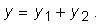
Ai putea afla cum oscilează pendulul adunând, pentru fiecare moment de timp, elongaţiile oscilaţiilor independente care se compun.
În figura 1A10−1 este prezentat procesul de adunare punct−cu−punct a elongaţiilor a două oscilaţii armonice.
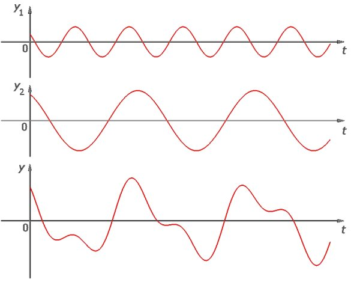
Fig. 1A10−1. Compunerea a două oscilaţii armonice independente, având aceeaşi direcţie.
Adunarea punctu−cu−punct este însă o operaţie laborioasă (trebuie să aduni multe perechi de valori), care ar trebui refăcută de fiecare dată când se schimbă ceva la măcar una dintre oscilaţiile care se compun!
În cazul unei oscilaţii armonice care se desfăşoară conform legii de mişcare:
| 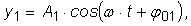 | (1) |
poţi oricând rescrie legea de mişcare, astfel încât adunarea punct−cu−punct să fie simplificată.
Astfel, dezvoltând funcţia cosinus din expresia (1), obţii:
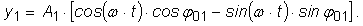
Regrupând termenii, obţii:
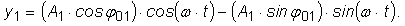
Aşadar, poţi oricând scrie legea de mişcare a unei oscilaţii armonice ca o sumă de doi termeni:
| 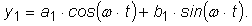 | (1') |
unde 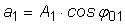 şi 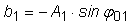 sunt doi factori constanţi, dependenţi de amplitudinea şi faza iniţială a oscilaţiei.
Asemănător, o altă oscilaţie armonică, pe aceeaşi direcţie şi aceeaşi pulsaţie, având legea de mişcare:
| 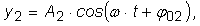 | (2) |
poate fi scrisă sub forma:
| 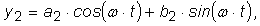 | (2') |
unde, de data aceasta, 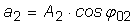 şi 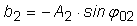.
Compunerea oscilaţiilor (1) şi (2), puse sub forma dată de (1'), respectiv (2'), conduce la o oscilaţie a cărei elongaţie este, pentru oricare moment de timp:
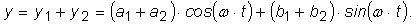
Oscilaţia rezultantă are aceeaşi formă ca o oscilaţie armonică:
| 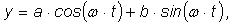 | (3) |
unde:
| 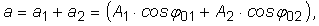 | (3') |
şi
| 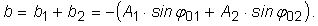 | (3'') |
Rezultatul poate fi generalizat pentru compunerea oricâtor oscilaţii armonice având aceeaşi direcţie şi aceeaşi pulsaţie, extinzând sumele care reprezintă coeficienţii a şi b. Aşadar:
Rezultatul compunerii oscilaţiilor armonice având aceeaşi direcţie şi aceeaşi pulsaţie este tot o oscilaţie armonică, având aceeaşi direcţie şi aceeaşi
pulsaţie.
Acesta este un rezultat remarcabil, care sporeşte utilitatea teoretică şi practică a oscilaţiilor armonice.
Provocarea 1A10−2
Cât te aştepţi să fie amplitudinea oscilaţiei rezultate prin compunerea oscilaţiilor armonice (1) şi (2)?
Deoarece 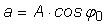 şi 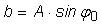, A fiind amplitudinea oscilaţiei rezultante, iar φ0 faza sa iniţială, obţii imediat că:
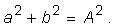
Folosind relaţiile (3') şi (3''), obţii că:
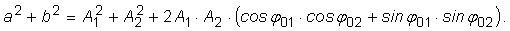
Termenul dintre paranteze este chiar cosinusul diferenţei de fază dintre oscilaţiile care se compun:
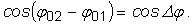
Aşadar,
Amplitudinea oscilaţiei rezultate prin compunerea a două oscilaţii armonice, având aceeaşi direcţie şi aceeaşi pulsaţie, este:
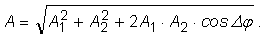
Amplitudinea oscilaţiei rezultante depinde atât de amplitudinile oscilaţiilor care se compun, dar şi de defazajul dintre acestea.
Astfel, când defazajul este nul (sau, în general, multiplu par de p), adică atunci când oscilaţiile care se compun sunt în fază, amplitudinea oscilaţiei rezultante este maximă (figura 1A10−2):
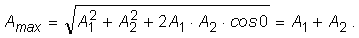
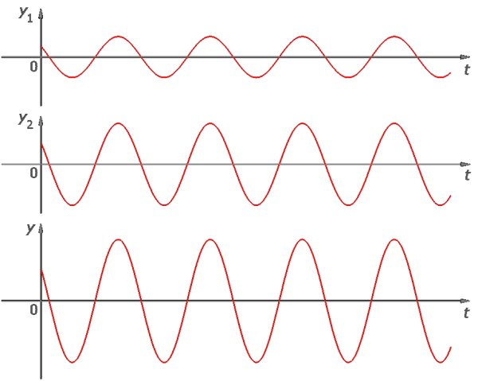
Fig. 1A10−2. Compunerea a două oscilaţii armonice în fază.
Dimpotrivă, când defazajul este p (sau, în general, multiplu impar de p), adică atunci când oscilaţiile sunt în opoziţie de fază, amplitudinea oscilaţiei rezultante este minimă (figura 1A10−3):
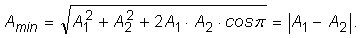
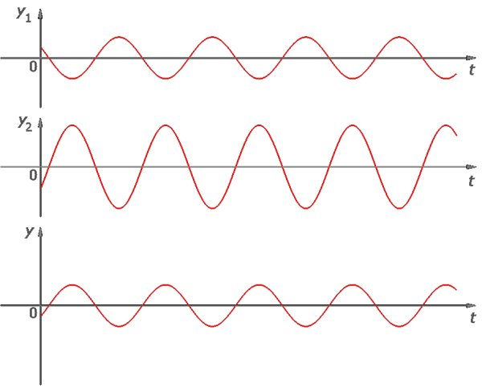
Fig. 1A10−3. Compunerea a două oscilaţii armonice în opoziţie de fază.
Dacă cele două oscilaţii care se compun sunt în opoziţie de fază şi au aceeaşi amplitudine, oscilaţia rezultantă are amplitudine nulă! Aceasta este cea mai spectaculoasă modalitate de contracarare a unei oscilaţii nedorite: compunerea acesteia cu o alta, de aceeaşi amplitudine şi în opoziţie de fază.
Investighează compunerea oscilaţiilor paralele folosind acest program!
Provocarea 1A10−3
Cât te aştepţi să fie faza iniţială a oscilaţiei care rezultă prin compunerea oscilaţiilor (1) şi (2)?